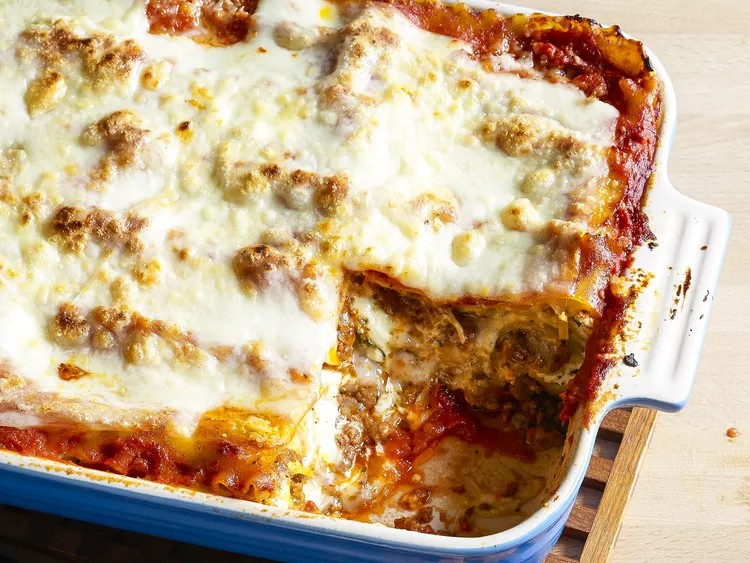

Lasagna

Description
Making lasagna can be time-consuming, but the results are well worth the wait. You'll find a detailed ingredient list and step-by-step instructions in the recipe below, but let's go over the basics:
Ingredients
- 1 pound ground beef
- 1/2 Onion and two cloves of garlic
- 1/2 large bell pepper, diced
- One can of crushed tomatoes, two cans of tomato sauce and two cans of tomato paste
- 3 ounces tomato paste
- 2 tablespoons chopped fresh oregano, or 2 teaspoons dried oregano
- Two tablespoons of white sugar
- 1 pinch garlic powder and/or garlic salt
- 1 tablespoon red or white wine vinegar
- Fresh parsley, dried basil leaves, salt, italian seasining, fennel seeds and black pepper
- Lasagna noodels
- Parmesan, mozzarella and ricotta cheese
- One egg
To assemble the lasagna
- 1/2 pound dry lasagna noodles (requires 9 lasagna noodles - unbroken)
- 15 ounces ricotta cheese
- 1 1/2 pounds (24 ounces) mozzarella cheese, grated or sliced
- 1/4 pound (4 ounces) freshly grated Parmesan cheese